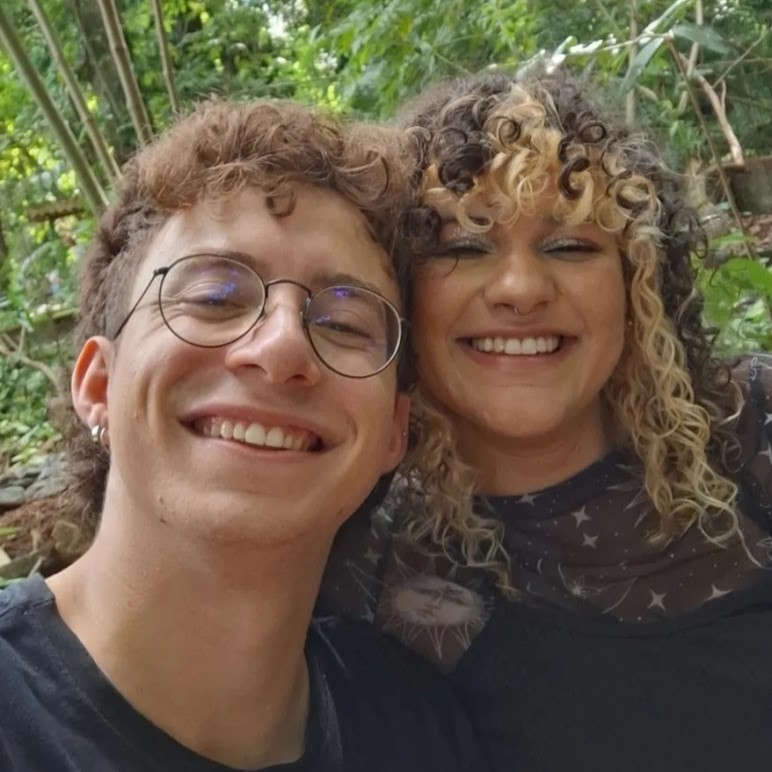
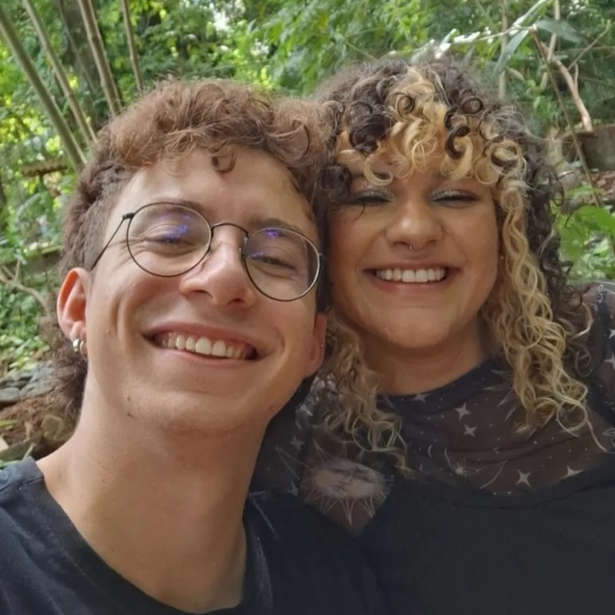
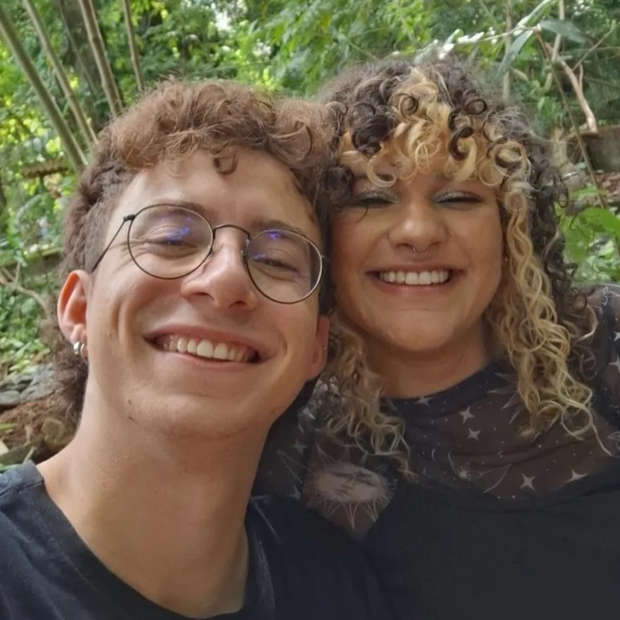

06/02/2024
(esse site foi concluído dia 05/02/2024, 20:28)

É incrível como todos esses sentimentos por você mexem comigo, é uma intensidade sem igual. O amor que sinto, a saudade que bate quando nos despedimos, é uma loucura toda própria.
É engraçado demais pensar que eu, que sempre fui um tanto solitário (e até gostava disso), agora estou vivenciando esse trem delicioso, esse sentimento de compartilhar a vida com alguém, mesmo nas pequenas coisas. Cada mensagem sua de manhã me faz sorrir, é quase como se eu não acreditasse que estou vivendo isso, kkkkkkkkkkk.
Namorar você é incrível, fazer planos contigo, ser completamente autêntico ao seu lado, é uma delícia. É surreal pensar que não quero mais imaginar meu futuro sem você, sério, não quero mesmo. Não quero ficar longe de você, não quero deixar de te namorar um dia (a não ser que seja para casar, kkkkk).
Esse carinho intenso que sinto por você é algo novo para mim, eram coisas meio reprimidas no passado, tanto em relacionamentos quanto não amorosos. Você me faz feliz nas coisas mais simples, obrigado por me permitir ser eu mesmo e por também ser você mesma comigo.
Agradeço por me dar a liberdade de desabafar sobre qualquer coisa, e por compartilhar seus sentimentos comigo. Ah, e obrigado por ter feito algo tão mágico no dia 06, segurando as pontas desde o dia 04.
Enfim, eu te amo demais, é além da conta mesmo. Agradeço por aceitar meu jeitinho emocionado, e aaaaaaa, te quero para sempre. Quero você ao meu lado para sempre, acho que todo mundo à minha volta já percebeu isso, kdsjakdjakdjaj. Quero casar com você!
Você é a pessoa que mais amei nesta vida, e obrigado por me dar a oportunidade de te amar.
Amor é ser estúpido juntos, e ser estúpido juntos significa que essa pessoa faz você sorrir, faz você rir. Ela te faz sentir que pode sentir uma alegria abundante, é como se você pudesse ser o seu eu mais infantil, sua guarda está baixa, você se sente seguro.
É como Dr. Seuss que escreveu: "Você sabe que é amor quando você encontra alguém cuja esquisitice é compatível com a sua, e quando você cai nessa esquisitice conjunta você chama de amor". Encontrar a sua pessoa é encontrar alguém que permite que você seja o seu eu mais autêntico.
Ainda é bizarro pra mim conseguir acreditar no quão incrível é nossa história. Primeiro pensando no começo pelo Tinder que, pra mim, já é algo absurdo o suficiente kkkkkkk nunca imaginei que poderia encontrar alguém pro resto da minha vida naquele app. Depois de longas conversas no WhatsApp marcamos de ir tomar um cafézinho no Rosa Café, e nossa que dia maravilhoso, eu estava tão a vontade com você ali que nem senti o tempo passar, parecia que estava no paraíso.
Tanto não senti o tempo passar que o Café simplesmente fechou e ainda estava precisando de mais horas do seu lado, depois dali quando fomos no Flamis tive coragem de ficar mais grudado em você e dar nosso primeiro beijo. E ai que dia maravilhoso, não queria que ele tivesse acabado tão cedo kkkkkkkk. Enfim, daquele dia em diante já tinha algo semeado no meu coração, aquela sementinha do amor que viria a ser o melhor relacionamento da minha vida.
Os detalhes do nosso segundo encontro são maravilhosos demais, sou eternamente grato ao seu amigo por ter te dado o empurrãozinho a não desmarcar. Desde o primeiro "eu te amo" que soltei naquela segunda pós ano novo (depois de muita insistência sua, porque eu estava com muita vergonha), já sentia que era algo especial, já sentia que queria namorar com você e compartilhar minha vida com essa pessoa tão incrível.
O dia 06/01 se tornou mágico para nós, é como se carregasse toda a energia do nosso início. Ah, esse é, sem dúvida, o melhor dia da minha vida (até agora)!